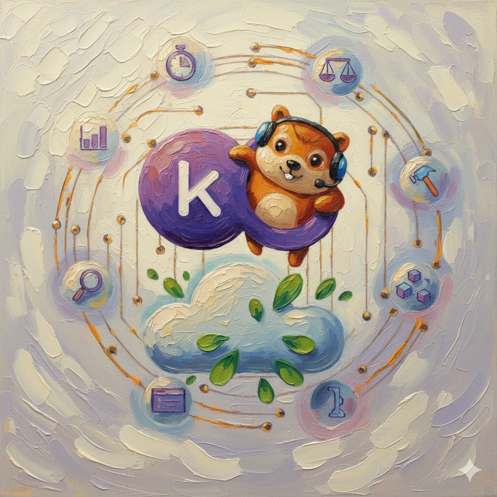

01 · Graduation project
Intelligent Cluster Optimizer
A Go-based Kubernetes resource optimizer that right-sizes CPU and memory requests to cut cloud waste without risking workload stability. A statistical engine analyzes historical usage from Prometheus, and a four-layer safety framework validates every change before it lands — designed after studying where VPA, KEDA, Goldilocks, Polaris, and Karpenter fall short.
- Go
- Kubernetes API
- Custom Operators
- Prometheus
- Docker
- Statistical Analysis